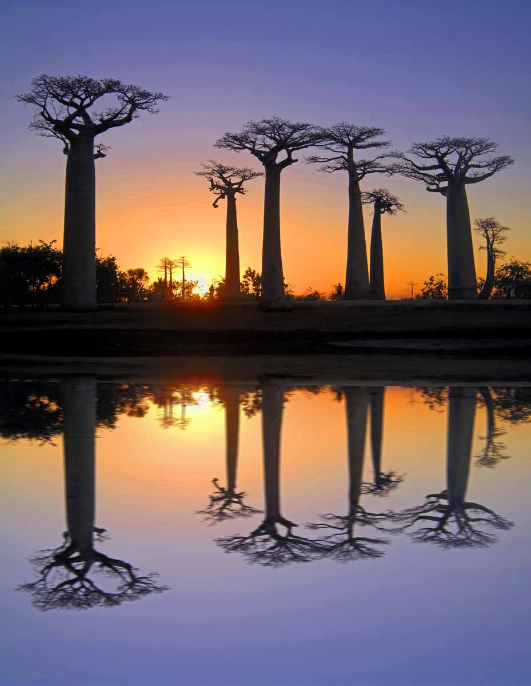
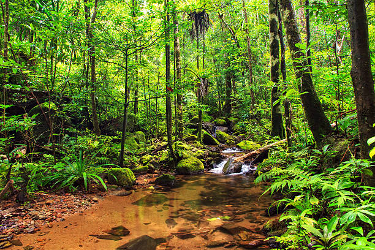
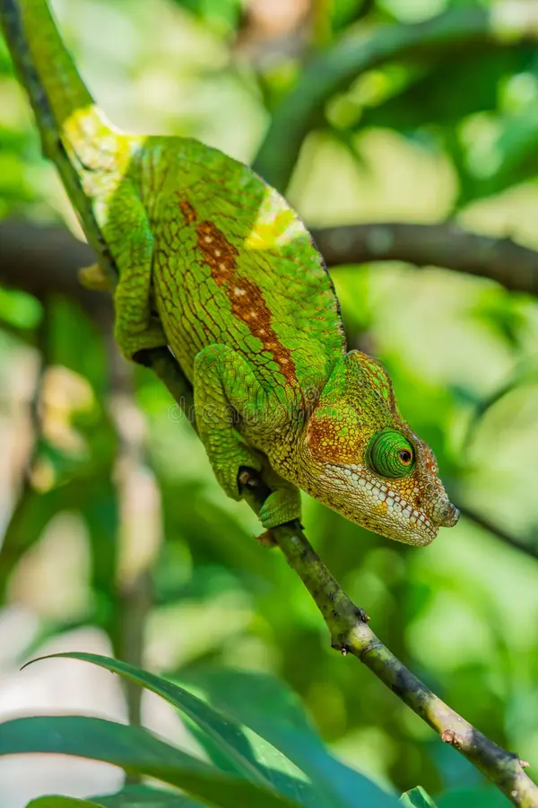
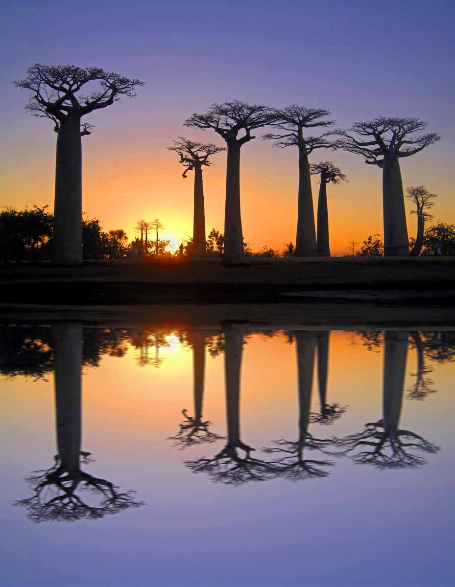
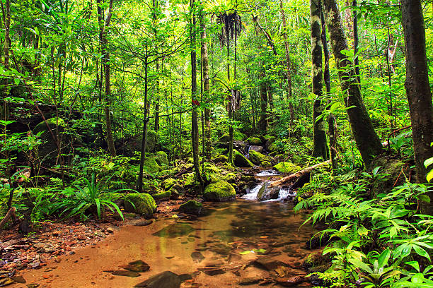
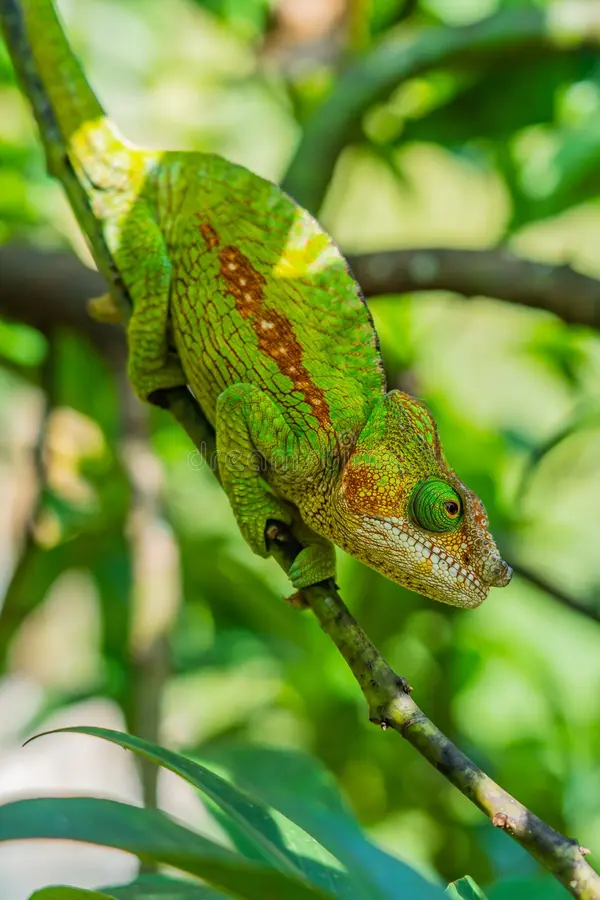

A Living Laboratory of Evolution
Madagascar separated from other continents 88 million years ago, resulting in ecosystems where 90% of wildlife is found nowhere else on Earth. From lemurs to baobabs, this island is a conservation priority of global importance.
Community-Led Conservation
Our tours directly support local communities engaged in reforestation and wildlife protection. Visitors contribute to anti-poaching efforts and sustainable livelihood projects that protect Madagascar's natural heritage.
Responsible Wildlife Viewing
We follow strict guidelines for lemur watching and other wildlife encounters, ensuring minimal disturbance to animals and their habitats. All guides are trained in ethical wildlife tourism practices.
 




